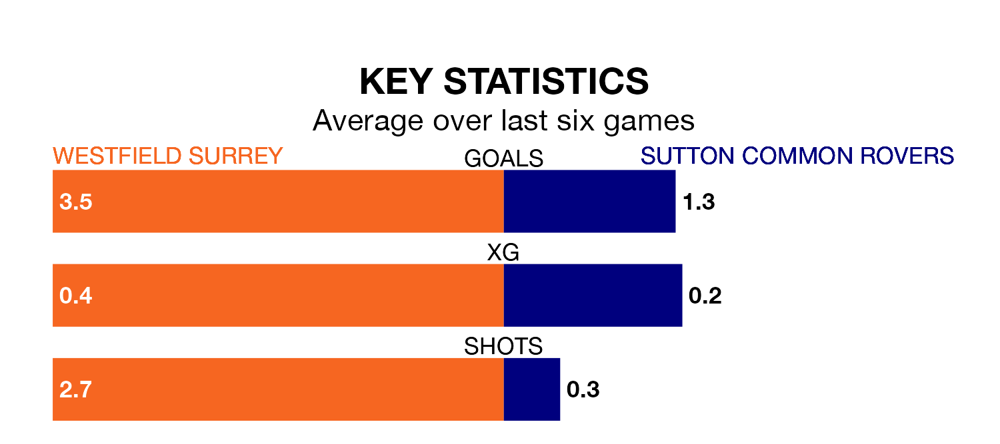

Westfield Surrey host Sutton Common Rovers on Saturday on the back of seven consecutive wins in Isthmian League Division One South Central.
It means Westfield Surrey have picked up the maximum 21 points from their last seven games, and they face a Rovers side who have lost their last two matches, and collected six points from the last possible 21.
With 51 goals in 23 games so far this season, Westfield Surrey are scoring more than average in the league with 2.2 goals per game. And they are conceding fewer than average, letting in 35 goals at a rate of 1.5 per game.
Sutton Common, meanwhile, are below average scorers, with 1.4 goals per game, compared to a league average of 1.7. They have conceded 1.8 goals per game.
The home team are sixth in the table after 23 games, of which they have won 14 and drawn four, earning 46 points.
Rovers are seven places behind Westfield Surrey in 13th, with eight wins and five draws putting them on 29 points.
In the last five years, Westfield Surrey and Sutton Common have played each other on five occasions. Westfield Surrey won four of them and they drew once.
On average, Westfield Surrey scored 2.4 goals and Rovers 0.8 in those matches.
Their last meeting was on October 14, when Westfield Surrey won 3-0 away.
Westfield Surrey's last match was on Tuesday, a 3-2 win against Binfield.
Sutton Common drew 3-0 with South Park last time out, on Wednesday.
Updated: 10:40 (UTC), 01/02/24